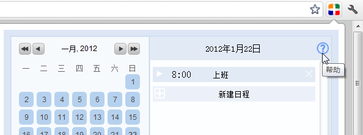
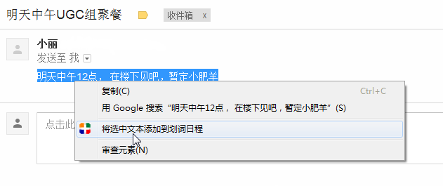
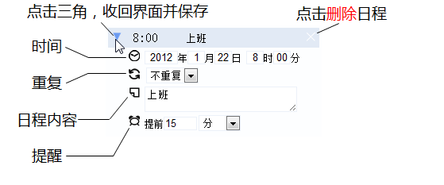

划词日程-帮助
如何再次查看此帮助？
点击浏览器右上角的“划词日程”图标，打开日程表界面，点击界面右上角的问号图标，即可打开帮助页面。

划词日程可以做什么？
划词日程是一款日程管理插件，它可以：
- 通过选取文本的方式快速创建日程；
- 用简洁的界面帮助你管理日程；
- 在日程提醒时刻弹出桌面提醒。
如何通过选取文本快速创建日程？
先选取一段包含有时间、日程内容的文本，点击鼠标右键，在弹出菜单中选择"将选中文本添加到划词日程" 。

对弹出的表格进行一些修改，点击对号图标保存日程。

如何在划词日程的日程表界面管理日程？
日程表界面和按钮功能如下

点击日程项左侧的三角，就可以展开如下图所示的修改日程界面，对日程进行修改后，再点击三角号即可收回并保存。

点击新建日程左侧的加号，就可以展开如下的新建日程界面，对日程进行编辑后，再点击加号即可保存日程，点击新建日程右侧的叉号可以取消编辑。

如何联系我们以及获得支持？
划词日程是托管在Google Code上的开源项目，您可以访问 https://code.google.com/p/easycal/ 查看详情。
如果您对划词日程有什么意见或建议，欢迎致信easycal@googlegroups.com，我们会尽快给予您回复。
如果您希望联系开发者，您同样可以致信easycal@googlegroups.com。